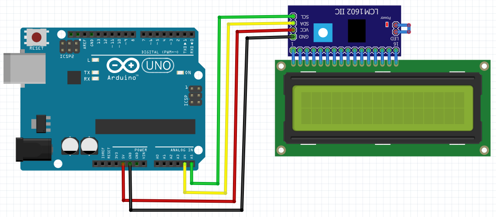

Praktik Display Character LCD I2C
Visualisasi Data & Antarmuka LCD I2C 16x2
Pelajari komunikasi protokol I2C (SDA/SCL) untuk menghemat penggunaan pin Arduino, menampilkan teks berjalan (running text) khusus pada baris ke-0, serta data sensor pada layar LCD 16x2.
Skema Rangkaian
Skema Misi 1

Simulator LCD 16x2
I2C: 0x27
GND
VCC
SDA (A4)
SCL (A5)
Pilih Misi Praktikum
3 Misi Utama
Misi 1: Menampilkan Teks Dasar pada LCD I2C
Mengirimkan karakter string ke modul LCD I2C 16x2 menggunakan library LiquidCrystal_I2C melalui pin SCL (A5) dan SDA (A4).
Arduino Uno
sketch_misi1_lcd_basic.ino
Ready | LCD: SDA(A4), SCL(A5)
Arduino Uno on COM3
Serial Monitor (Simulasi LCD)
[Serial Monitor Siap. Klik "Upload & Run" untuk memulai]
Status: Connected @ 9600 baud